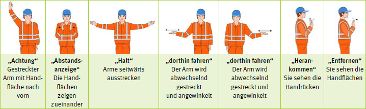

| Bestimmungsgemäße Verwendung | muss von der Herstellerfirma in der Betriebsanleitung definiert werden, damit das Produkt sicher bedient werden kann. Dazu muss auch die vorhersehbare Fehlanwendung beschrieben werden. |
| Frischbeton | ist verarbeitbarer und verdichtbarer Beton. Die Eigenschaften wie z. B. Viskosität, Fließgrenze und innere Reibung beschreiben den Frischbeton und beeinflussen das Verhalten des Baustoffes beim Mischen, Fördern, Einbringen und Verdichten. |
| Leitmerkmalmethode | ist eine Handlungshilfe zur Ermittlung der tatsächlich (objektiv) vorhandenen physischen Arbeitsbelastung. Derzeit existieren drei Leitmerkmalmethoden für die Belastungsarten "Heben, Halten und Tragen von Lasten" (LMM HHT), "Ziehen und Schieben von Lasten" (LMM ZS) und "manuelle Arbeitsprozesse" (LMM-MA). |
| Instandhaltungsarbeiten | fasst als Oberbegriff alle Arbeiten zur Wartung, Inspektion und Instandsetzung zusammen. Definiert in TRBS 1112 und DIN 31051, Ausgabedatum 2019-06. Die außerplanmäßige Instandhaltung ist z. B. dann notwendig, wenn auf der Baustelle Störungen auftreten und die Maschinistin bzw. der Maschinist dies an die Instandhaltung weitergibt. |
| Restenergie | ist eine gespeicherte Energie, die nach der Außerbetriebnahme und der Trennung der Anlage oder Maschine von der Energiezufuhr noch vorhanden sein kann. Sie muss ohne Gefährdung von Personen kontrolliert abgeleitet werden können. |
| Sicherheitsschuhe | sind Schuhe, die die sicherheitstechnischen Anforderungen erfüllen. Sie sind mit Zehenkappe für hohe Belastungen ausgestattet, deren Schutzwirkung mit einer Prüfenergie von 200 J bzw. mit einer Druckkraft von 15 kN geprüft wurden. |
| Stand der Technik | ist von den anerkannten Regeln der Technik und dem Stand der Wissenschaft und Technik zu unterscheiden; umfasst den Entwicklungsstand fortschrittlicher Verfahren, Einrichtungen und Betriebsweisen. |
| Transportbeton | ist Frischbeton, der in entsprechenden Mischwerken, z. B. Transportbetonwerken, hergestellt wird und in geeigneten Einrichtungen wie Mischfahrzeugen, Kübeltransporteinrichtungen zur Einbaustelle transportiert wird. |
Baustellenerfassungsblatt für den Einsatz von AutobetonpumpenAngaben zur bestellten Pumpe: Typ: max. Reichweite: m Druckkraft je Stützbein: t Platzbedarf der Pumpe: L = m /B = m Durchfahrtshöhe mind. 4 m: Ja Nein Angaben zur Baustelle: Adresse: Ansprechpartner (Name): Tel.: Fax:
Entsprechen Ihre Angaben nicht den tatsächlichen Baustellenbedingungen und wird damit ein sicherheitsgerechter Einsatz |
||
Gesellschaft:
Werk:
| Betonpumpenbestellung | |
| Datum der Betonage | |
| Uhrzeit | |
| Betonpumpe | |
| Kunde | |
| Baustellenanschrift mit PLZ und Hausnummer | |
| Barzahler/Vorkasse | nein ja € Brutto |
| Telefonnummer | |
| Menge mit oder ohne Rest | |
| Schläuche | m DN 65 m D DN 100 |
| Bauteil | Sauberkeitsschicht Bodenplatte, Fundament Wände Absturzsicherung vorhanden: Säulen Absturzsicherung vorhanden: Ringanker Absturzsicherung vorhanden: Treppen Absturzsicherung vorhanden: Decken Absturzsicherung vorhanden: Sonstiges: |
| kann Pumpe auswaschen | |
| gepl. Betonierzeit | |
| Besonderheiten am Aufstellort der Betonpumpe | |
| Stromleitungen | |
| Schächte, Hohlräume | |
| Böschungen | |
| Genehmigung im öffentl. Straßenverkehr | |
| betontechnologische Besonderheiten | |
| Bemerkungen | |
Mischmeister _____________________ Datum _____________________
Prüfliste für Betonmischfahrzeuge vor dem Einsatz Kennzeichen
| Fahrmischerart |
||
| Hersteller | Aufbau | Ladevolumen |
| Name: Typ: Baujahr: |
Festaufbau Wechselrahmen Auflieger |
6 m³ 8 m³ 10 m³ 12 m³ |
| Einstieg in das Fahrzeug i O defekt |
Höhe des Einstieges |
Rutschhemmung vorhanden Ja Nein |
| Haltegriffe vorhanden Ja Nein |
Beleuchtung, Brems,- und Blink-, Begrenzungsleuchten in Ordnung Ja Nein |
Umfeldbeleuchtung in Ordnung Ja Nein |
| Gelenkwelle zum Antrieb der Hydraulikpumpe, Schutz vorhanden Ja Nein |
Abdeckung von Laufrollen der Mischtrommellagerung, Schutz vorhanden Ja Nein |
Abdeckung des Trommelkranzes, Schutz vorhanden Ja Nein |
| Vorstehende Teile am Trommelmantel Ja Nein |
Möglichkeit die Trommel gegen unbefugtes Ingangsetzen zu sichern Ja Nein |
Trommelsicherung am Laufring vorhanden und in Ordnung Ja Nein |
| Anbauteile Verlängerungsrutschen gesichert Ja Nein |
Anbauteile Verlängerungsrohre gesichert Ja Nein |
Anbauteile Wasserschlauch gesichert und in Ordnung, Hähne dicht Ja Nein |
| Behälter, Eimer, Schaufel, Besen, Waschbürste, Spachtel und Ähnliches gesichert Ja Nein |
Wassertank am Aufbau vorhanden Ja Nein |
wiederkehrende Prüfungen durch amtlich anerkannten Sachverständigen erforderlich Ja Nein |
| Prüfbuch vorhanden Ja Nein |
Zulässiger Betriebsdruck bar |
Wassermenge des Tanks Inhalt m³ |
| Schläuche sicher befestigt Ja Nein |
Überfüllrohr in Funktion Ja Nein |
Be- und Entlüftungsventil funktionsfähig Ja Nein |
| Druckmesseinrichtung ist funktionsfähig Ja Nein |
Sicherheitseinrichtung gegen Drucküberschreitung ist unbeschädigt und verplombt. Ja Nein |
|
| Aufstiegsleiter zum Einfülltrichter in Ordnung Ja Nein |
Keine Risse am Leiterrahmen Ja Nein |
Verbindungselemente in Ordnung Ja Nein |
| Handläufe, Knie- und Fußleisten des Leiterpodestes in Ordnung Ja Nein |
schwenkbare Auslaufschurre freigängig und gegen unbeabsichtigtes Schwenken zu sichern Ja Nein |
Verstellspindel leichtgängig und gegen unbeabsichtigtes Herausdrehen zu sichern Ja Nein |
| Ingangsetzen des Fahrmotors mit Betätigungseinrichtungen am Heck des Fahrzeuges möglich Ja Nein |
Kennzeichnungen der Schaltfunktionen vorhanden und lesbar Ja Nein |
Notauseinrichtung in Ordnung Ja Nein |
| Schalthebel für Trommelbetätigung und Drehzahl vorhanden Ja Nein |
Schalthebel zu sichern und leichtgängig Ja Nein |
Bowdenzüge leichtgängig und Mantel in Ordnung Ja Nein |
| Schläuche der Hydraulik in Ordnung Ja Nein |
Ölverluste an der Hydraulikpumpe oder den Schläuchen Ja Nein |
Schläuche porös, Scheuerstellen oder sonstige Beschädigungen Ja Nein |
| Aufbaurahmen rissfrei, korrosionsfrei, keine Verbiegungen Ja Nein |
Sonstige Schäden am Aufbaurahmen und Aufbau |
|
| Unterfahrschutz, Stoßstange in Ordnung Ja Nein |
Schmutzfänger vorhanden und in Ordnung Ja Nein |
Zugmaul, Bolzen mit Stickel und Abschleppseil vorhanden und in Ordnung Ja Nein |
| Zusatzmittelbehälter vorhanden und in Ordnung Ja Nein |
Absperrhähne des Zusatzmittelbehälters in Ordnung Ja Nein |
Gibt es eine Skala, auf der man die Zusatzmittelmenge ablesen kann und ist sie in Ordnung Ja Nein |
| Dosieranlage für Zusatzmittel vorhanden und in Ordnung Ja Nein |
Ist diese Dosieranlage für Zusatzmittel prüfpflichtig Ja Nein |
Wurde die Prüfung bei Prüfpflicht durchgeführt? Ja Nein |
| Liegen Sicherheitsordner über eine Gefährdungsbeurteilung zu den Tätigkeiten vor? Ja Nein |
Gibt es einen Plan für einzusetzende PSA und steht PSA bereit? Ja Nein |
Gibt es einen Notfallplan und Erste- Hilfe Ausstattung? Ja Nein |
Besonderheiten, Mängel, Vermerke
Prüfer/Prüferin
Prüfdatum
Kenntnisnahme des Betriebsleiters/der Betriebsleiterin
Die zu überprüfende Ausrüstung umfasst:
Förderleitungen und flexible Schläuche sauber und einsatzfähig
Schalenkupplungen und die Sicherheitsleine durch die die Leitungen an der Mastspitze (Endschlauch) und die anderen hängenden Komponenten gehalten werden sollten auf Spiel und Beschädigung überprüft werden und Sicherheitsleine
90°-Rohrbögen
Wassertanks
Rohrreduktionen
Abstützplatten
Kanthölzer
Rundumleuchten
Zustand der Hilfs-Betriebsmittel muss überprüft werden:
Werkzeugkasten
Manuelle Fettpresse
Schaufel
Nageleisen
Spachtel
Besen/Handfeger, Öl-Notfallset
Augenspülflasche
UV-Schutzmittel (Sonnenschutzcreme)
Vollsichtschutzbrillen
Im Sommer genügend Wasser oder andere Getränke
Bordausrüstung in dem Fahrzeug muss auf Vollständigkeit hin kontrolliert werden:
Warnblinkleuchte
Warndreieck
Windsichere Handlampe
Werkzeugtasche (Werkzeuge, Birnen, Sicherungen usw.)
Feuerlöscher
Warnkegel
Unterlegkeil
Absperrband
Notfallhammer
Erste-Hilfe-Kasten, der vollständig ist (auf das Haltbarkeitsdatum achten)
Mitzuführende Unterlagen
Führerschein nach § 4 (2) FeV
Hauptuntersuchung (HU) nach § 29 StVZO
Prüfbescheinigung Abgasuntersuchung (AU) nach § 47a (4) StVZO
Prüfbescheinigung für Geschwindigkeitsbegrenzer (ab 3,5t) nach § 57d (2) StVZO
Prüfprotokoll der wiederkehrenden Prüfungen
Alle anderen Dokumente, die von der Gesetzgebung gefordert sind
Darüber hinaus wird empfohlen: Sicherheitscheckliste "Betonpumpen auf der Baustelle"
des Bundesverbandes der Deutschen Transportbetonindustrie e. V. (BTB)
Der Fahrer oder die Fahrerin hat sich zu vergewissern, dass einweisende Personen in der Anwendung der Handsignale unterwiesen sind und sie auch kennen.

Wartungs- und Schmiercheckliste für Betonpumpen
Kennzeichen: Name: Monat:
km: Betriebs-h:
| 1 | Wasser im Spülkasten kontrollieren und erneuern | |||||
| 2 | Schmierstellen Fahrgestell | |||||
| 2.1 | Vorderachse | |||||
| 2.2 | Hinterachse | |||||
| 2.3 | Kardanwellen (Fahrgestell) | |||||
| 2.4 | Nebenantriebswelle | |||||
| 3 | Schmierstellen Aufbau | |||||
| 3.1 | Schmierleiste für Mast und Turm (für Halslager und Fußlager Mastpaket senkrecht stellen) | |||||
| 3.2 | Ausleger abschmieren | |||||
| 4 | Trichter & Rührwerk - Abschmieren und Sichtkontrolle, ob das Fett an allen Lagerungen im Trichter austritt |
Betonagen auch zwischendrin |
||||
| 5 | Zentralschmieranlage befüllen | |||||
| 6 | Speicherdruckkontrolle - Speicherdruck muss min. 90 bar anzeigen, bei weniger Druck Meldung in der Dispo |
|||||
| 7 | Routinekontrollen Fahrgestell | |||||
| 7.1 | Sichtkontrolle Ölverlust | |||||
| 7.2 | Kontrolle Motoröl | |||||
| 7.3 | Kontrolle Kühlwasser | |||||
| 7.4 | Kontrolle Zentralschmierung | |||||
| 7.5 | Kontrolle Reifendruck und Reifenprofil | |||||
| 8 | Routinekontrollen Aufbau | |||||
| 8.1 | Sichtkontrolle Ölverlust | |||||
| 8.2 | Hydraulikölstand | |||||
| 8.3 | Kondenswasser im Hydrauliköl | |||||
| 8.4 | Überprüfung von Verschmutzungsanzeigen an Saug-, Druck-, Entlüftungs- und Nebenstromfiltern |
|||||
| 9 | Sicherheitsrelevante Merkmale | |||||
| 9.1 | Sicherungssplinte Verrohrung/Schellen | |||||
| 9.2 | Sichtkontrolle Absturzsicherungen | |||||
| 9.3 | Sichtkontrolle Aufstiegshilfen | |||||
Alle oben stehenden Wartungspunkte sind ordentlich und gewissenhaft von mir ausgeführt.
Datum _____________________ Unterschrift _____________________